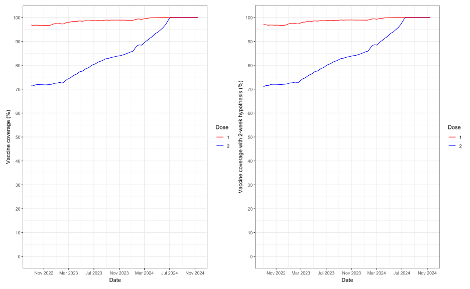

library(tidyverse)
library(lubridate)
library(janitor)
Sys.setlocale("LC_TIME", "English")[1] "English_United States.1252"df <- readRDS("D:/OUCRU/vac_coverage/data/vaxreg_hcmc_measles.rds")library(tidyverse)
library(lubridate)
library(janitor)
Sys.setlocale("LC_TIME", "English")[1] "English_United States.1252"df <- readRDS("D:/OUCRU/vac_coverage/data/vaxreg_hcmc_measles.rds")Vaccine shortage public started in May 2022 source
district <- unique(df$district)
week <- seq(as.Date("2022-05-01"),as.Date("2024-07-01"),by = "month")
dttlv <- df[,c("dob","district","date_m1","date_m2")]
out_timely <- data.frame()
for (k in 1:length(district)){
td <- subset(dttlv, district == district[k])
for (i in 1:length(week)){
td$lackd <- week[i]
td$ageuntil <- interval(td$dob, td$lackd) / years(1)
## subset children aged from 9 months to 9 months 2 weeks at chosen time
slec <- td[td$ageuntil >= 0.75 & td$ageuntil <= 0.75 + 0.5*1/12,]
slec$agevac <- interval(slec$dob,slec$date_m1) / years(1)
slec$vac_on_date1 <- ifelse(slec$agevac < slec$ageuntil + 1/12,1,0)
slec$vac_on_date1 <- replace(slec$vac_on_date, is.na(slec$vac_on_date1),0)
re <- slec %>% group_by(vac_on_date1) %>% count()
cus <- data.frame(district = district[k],
date = week[i],
per = as.numeric(re[2,2])/(as.numeric(re[2,2])+as.numeric(re[1,2])))
out_timely <- rbind(out_timely,cus)
}
}ggplot(data = out_timely,aes(x = date,y = per*100))+
geom_line()+
# scale_y_continuous(limits = c(50, 100), breaks = seq(50,100,by = 10)) +
labs(x = "Date",y = "Timely vaccination percentage (%)")+
scale_x_date(breaks = "2 months",
date_labels= "%b %Y")+
facet_wrap(vars(district),ncol = 5)+
theme_bw()+
theme(axis.text.x = element_text(angle = 45,size = 8,
hjust=1))+
ggtitle("Timely vaccination percentage of children (9m-9m2w) who get vaccinated first dose within 1 month from May 2022 - July 2024")df$is_2d <- ifelse(df$is_m1 == 1 & df$is_m2 == 1,1,0)
dfcal <- df[,c("dob","is_2d")]
date <- seq(as.Date("2022-09-01"),as.Date("2024-11-20"),by = "month")
cov_df <- data.frame()
for (i in 1:length(date)){
dfcal$trackd <- date[i]
dfcal$ageuntil <- interval(dfcal$dob, dfcal$trackd) / years(1)
dfcal <- dfcal[dfcal$ageuntil >= 0.75 & dfcal$ageuntil <= 5,]
ddd <- dfcal %>% group_by(is_2d) %>%
count()
ou <- data.frame(date = date[i],
coverage = as.numeric(ddd[2,2]/(ddd[1,2]+ddd[2,2])))
cov_df <- rbind(cov_df,ou)
}main <- ggplot(data = cov_df,aes(x = date,y = coverage*100))+
geom_line()+
scale_y_continuous(limits = c(0, 100), breaks = seq(0,100,by = 10)) +
labs(x = "Date",y = "Vaccine coverage (%)")+
scale_x_date(breaks = "2 month",
date_labels= "%b %Y",
limits = c(as.Date("2022-09-01"),as.Date("2024-11-20")))+
theme(axis.text.x = element_text(angle = 45,size = 8,
hjust=1))+
theme_bw()
sub <- ggplot(data = cov_df,aes(x = date,y = coverage*100))+
geom_line()+
# scale_y_continuous(limits = c(0, 100), breaks = seq(0,100,by = 10)) +
labs(x = "Date",y = "Vaccine coverage (%)")+
scale_x_date(breaks = "4 month",
date_labels= "%b %Y",
limits = c(as.Date("2022-09-01"),as.Date("2024-11-20")))+
theme_bw()
final1 <- main + annotation_custom(ggplotGrob(sub),
xmin=as.Date("2023-07-01"),
xmax=as.Date("2024-11-01"),
ymin=5, ymax=80)
final1 + ggtitle("Vaccine coverage of children (5m-5y) who get 2-doses vaccinated in Ho Chi Minh City from Sep 2022-Nov 2024")
dfcald <- df[,c("dob","district","is_2d")]
cov_df2 <- data.frame()
for (k in 1:length(district)){
dt <- subset(dfcald, district == district[k])
for (i in 1:length(date)){
dt$trackd <- date[i]
dt$ageuntil <- interval(dt$dob, dt$trackd) / years(1)
dt <- dt[dt$ageuntil >= 0.75 & dt$ageuntil <= 5,]
ddd <- dt %>% group_by(is_2d) %>%
count()
ou <- data.frame(district = as.character(district[k]),
date = date[i],
coverage = as.numeric(ddd[2,2]/(ddd[1,2]+ddd[2,2])))
cov_df2 <- rbind(cov_df2,ou)
}
}final2 <- ggplot(data = cov_df2,aes(x = date,y = coverage*100))+
geom_line()+
scale_y_continuous(limits = c(85, 100), breaks = seq(85,100,by = 5)) +
labs(x = "Date",y = "Vaccine coverage (%)")+
scale_x_date(breaks = "2 months",
date_labels= "%b %Y",
limits = c(as.Date("2022-09-01"),as.Date("2024-11-20")))+
facet_wrap(vars(district),ncol = 5)+
theme_bw()+
theme(axis.text.x = element_text(angle = 45,size = 8,
hjust=1))
final2 +
ggtitle("Vaccine coverage by districts of children (5m-5y) who get vaccinated two doses from Sep 2022-Nov 2024")